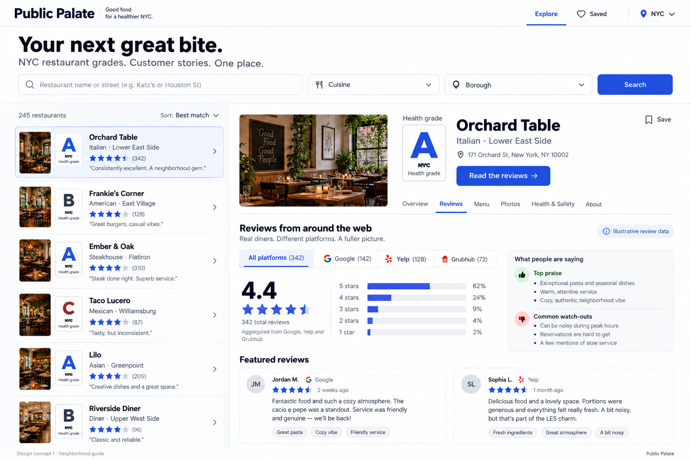
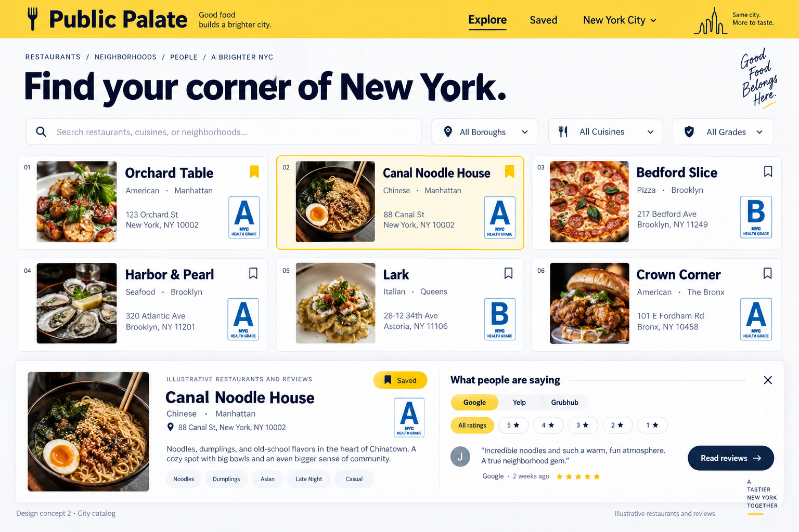
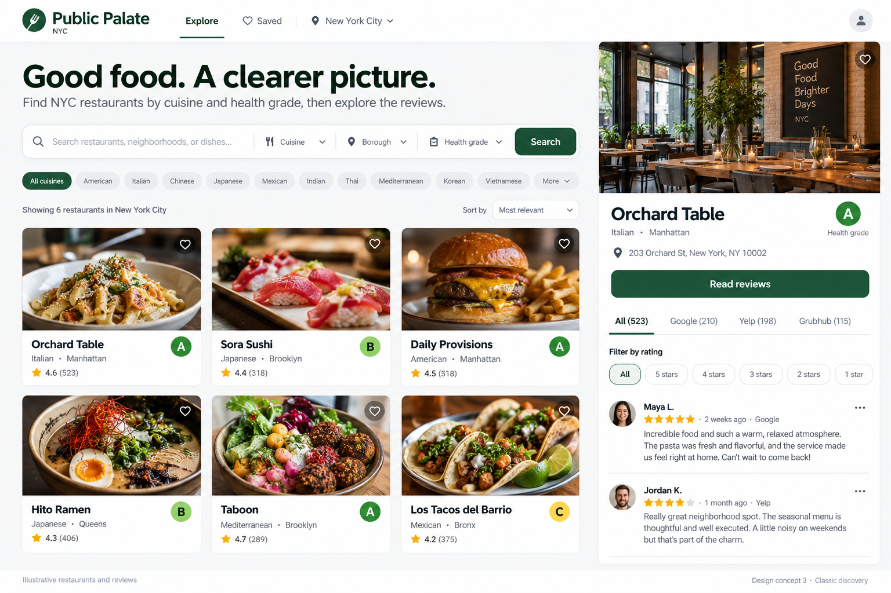

1. Blue neighborhood guide
Restaurant list on the left. A detailed review and inspection view on the right.

Choose the direction you want to use for your NYC restaurant app. These are visual mockups, with illustrative restaurants, photos, and review data. The working app will use the real NYC dataset and collected reviews.
Restaurant list on the left. A detailed review and inspection view on the right.

A compact grid for browsing, with the selected restaurant expanded below.

Food photography leads the browsing experience. Details stay alongside the results.
